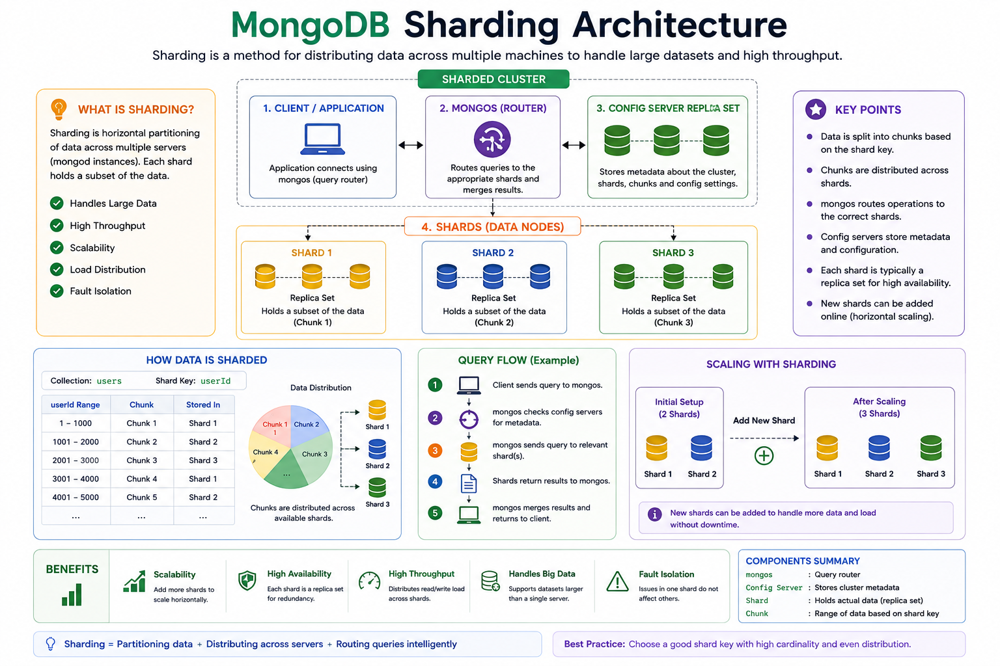

A quick primer on how MongoDB scales horizontally by splitting data across multiple machines.

Sharding is MongoDB's method of horizontal scaling — instead of one big server holding all your data, the data is split into chunks and distributed across multiple servers called shards, so each machine only holds a slice of the total dataset.
Why it matters: a single server has limits on storage, RAM, and throughput. Sharding lets a cluster grow by adding more machines rather than bigger ones.
| Strategy | How it Works | Good For |
|---|---|---|
| Ranged Sharding | Documents are split into chunks based on ranges of the shard key value | Range-based queries (e.g. date ranges) |
| Hashed Sharding | A hash of the shard key determines chunk placement, spreading data more evenly | Avoiding hotspots on sequential keys (like timestamps or auto-increment IDs) |
| Zoned Sharding | Specific ranges of shard key values are pinned to specific shards/zones | Geo-based data locality or tiered hardware |
balancer process runs in the background, moving chunks between shards to keep data evenly distributed.Choosing a poor shard key (e.g. low-cardinality fields, or monotonically increasing values like timestamps) can create "hot" shards that absorb most of the traffic, defeating the purpose of sharding.
Interview Tip: You never connect directly to a shard to configure sharding. Every sharding command is run against mongos, the query router that acts as the cluster's entry point.
Never execute sharding commands directly on a shard.
mongosh mongodb://mongos-host:27017Verify you're actually connected to the router:
db.adminCommand({ hello: 1 })sh.enableSharding("myDatabase")This does not shard any collections. It only marks the database as allowed to contain sharded collections — think of it as turning sharding ON for the database.
The shard key determines how MongoDB distributes documents across shards. For a document like:
{
_id: ObjectId(),
userId: 101,
name: "John",
city: "Delhi"
}Possible shard keys: userId, city, or email. Choosing the right one is the most important decision in sharding.
Required before sharding a collection for ranged sharding.
db.myCollection.createIndex({ userId: 1 })Verify it was created:
db.myCollection.getIndexes()sh.shardCollection(
"myDatabase.myCollection",
{ userId: 1 }
)MongoDB divides data into contiguous ranges (e.g. 1→1000 on Shard 1, 1001→2000 on Shard 2). This is excellent for range queries:
db.users.find({
userId: { $gte: 1000, $lte: 2000 }
})Monotonically increasing keys (like auto-increment IDs) cause all new inserts to land on the last shard, creating a hot shard.
sh.shardCollection(
"myDatabase.myCollection",
{ userId: "hashed" }
)MongoDB hashes the shard key so writes spread evenly instead of piling onto the last shard — ideal for equality lookups:
db.users.find({ userId: 12345 })sh.addShard(
"shardReplSet/host1:27018,host2:27018"
)MongoDB registers the new replica set as a shard, then the balancer gradually migrates chunks onto it.
sh.status()Sample output (simplified):
Sharding Status
Database
myDatabase
Collection
users
Shard Key
userId
Chunks
Shard A 20
Shard B 18
Shard C 22Shows sharded databases, sharded collections, shard keys, number of chunks, chunk distribution, registered shards, and balancer status. This is usually the first command used to troubleshoot a sharded cluster.
MongoDB stores data in chunks, not individual documents. Example placement:
Chunk 1 → Shard A
Chunk 2 → Shard A
Chunk 3 → Shard B
Chunk 4 → Shard CIf Shard A becomes overloaded, the balancer automatically moves chunks to even things out:
This keeps storage and load balanced across the cluster.
In production, every shard should be its own replica set for high availability. Here's how to stand one up:
// Start each node (run once per server/port)
mongod --replSet "rs0" --port 27017 --dbpath /data/rs0 --bind_ip localhost
// Connect to one node and initiate the set
rs.initiate({
_id: "rs0",
members: [
{ _id: 0, host: "localhost:27017" },
{ _id: 1, host: "localhost:27018" },
{ _id: 2, host: "localhost:27019" }
]
})
// Check status of all members
rs.status()
// See which member is currently primary
rs.isMaster()| Feature | Range Sharding | Hashed Sharding |
|---|---|---|
| Distribution | Sequential | Random / Uniform |
| Range Queries | Excellent | Poor |
| Write Distribution | Can create hotspots | Evenly distributed |
| Best For | Reporting, analytics | High write throughput, user data |
Because MongoDB must know that the database is allowed to contain sharded collections. Enabling sharding does not shard any collections by itself.
For range-based sharding, MongoDB requires an index on the shard key to efficiently split and route data. It also improves query performance.
mongos is the query router. It communicates with the config servers to update cluster metadata and coordinates all shards. Individual shards only store their portion of the data and do not manage cluster-wide configuration.
MongoDB's balancer automatically redistributes chunks from existing shards to the new shard to balance storage and workload.
Use a hashed shard key when writes are very frequent, you need even distribution across shards, and your queries are mostly equality lookups (e.g. userId = 12345).
Use a ranged shard key when your application frequently performs range queries ($gte, $lte), data is naturally accessed in sequential ranges, and you can avoid hotspots with a well-chosen shard key or compound key.
sh.status() and the balancer regularly to ensure chunks remain evenly distributed.Sharding = splitting a large dataset across multiple servers to scale storage and throughput horizontally. The shard key determines how data is split, mongos routes queries, config servers track metadata, and the balancer keeps everything evenly spread. It's a MongoDB feature you turn to when a single server (even a beefy one) can't keep up with your data or traffic.